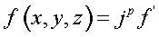
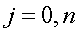

Converts the surface into multiple sheets.
Syntax
MULTIPLE n f' [ EXPONENT p ]
d x y z
| Option | Description |
|---|
| n | number of sheets to be generated |
| f' | additive constant to the original function |
| d | distance between original and first sheets |
| x y z | an arbitrary point on the original surface |
| EXPONENT p | exponent to which sheet number is raised |
Remarks
- The surface is converted into multiple
parallel surfaces. In other words, the equation of the surfaces becomes:


- The zeroth sheet is the original surface.
- Alternatively, ASAP can calculate f' such that the distance from a point x,y,z on
the original surface to the first sheet is d.
- The exponent p is
defaulted to 1, but can be used, for example, to get evenly spaced cylinders or
spheres (p=2).
- If MULTIPLE is being
used to define a diffraction grating, then the value of n is
irrelevant.
MULTIPLE Examples